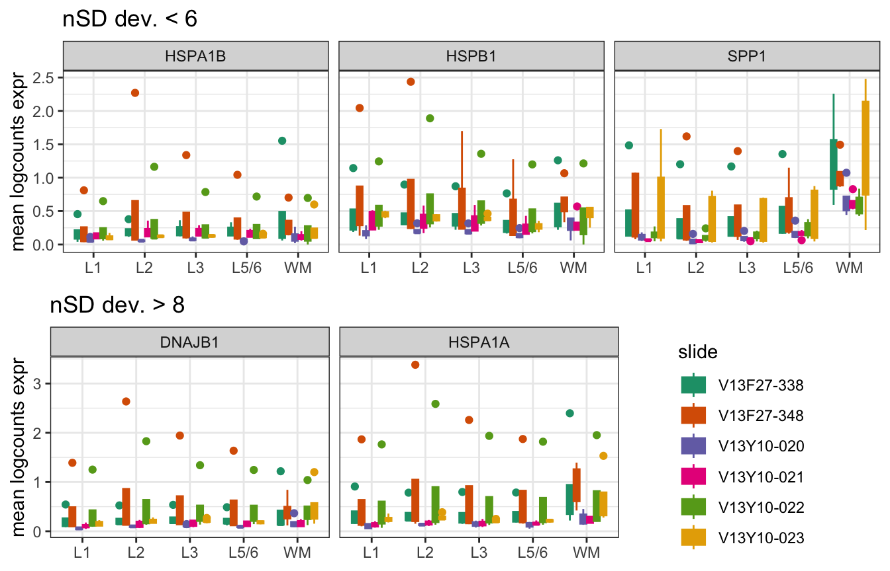

brain.df = read.csv("processed-data/bindev_default-brain_svgs-only.csv")4 MBv: batch = subject
We performed the scry::devianceFeatureSelection with batch= subject on only the 2098 SVGs.
4.1 Find subject-biased features
To isolate the influence of batch= subject we calculated the relative change in deviance and the difference in rank.
# care about loss in deviance
brain.df$d.diff = (brain.df$dev_default-brain.df$dev_brain)/brain.df$dev_brain
# care about increase in rank
brain.df$r.diff = brain.df$rank_brain-brain.df$rank_defaultFigure 4.1 Subject identity generates greater and more continuous changes in deviance and rank than slide identity

4.1.1 Check for WM differences
Based on the fact that tissue composition differences were most obvious in the number of spots identified as WM based on our rough spatial clustering (Figure 3.6), we performed an initial check to see if the three top WM markers were blatantly influenced by the inclusion of batch= subject in the binomial deviance model.
Figure 4.2 WM markers (red: MAP, MBP, OLIG1) do not appear to be preferentially changed by subject batch

The fact that these features are not the most altered by batch= subject gives us initial assurance that our feature-based QC approach is not identifying features that exhibit potential subject-bias due to the layer composition of the sample.
4.2 Improved method for selecting biased genes
The influence of batch= subject is greater in magnitude than that of batch= slide as determined by the ranges of relative change in deviance and rank difference in each model.
Figure 4.3 Inclusion of subject identity in the binomial deviance model is more impactful than slide
Further, these changes are more continuous (Figure 4.1), complicating the selection of a specific value for either metric to isolate potentially subject-biased genes. We decided to explore cutoffs based on the standard deviance (SD) of deviance and rank difference metrics to find a data-driven threshold.
4.2.1 SD cutoff: deviance
The wide range of relative change in deviance resulting from the inclusion of batch= subject was evident in the fact that some features were as many as 30 SDs away from the mean.
mean1 = mean(brain.df$d.diff)
sd1 = sd(brain.df$d.diff)
brain.df$nSD_dev = (brain.df$d.diff-mean1)/sd1
summary(brain.df$nSD_dev) Min. 1st Qu. Median Mean 3rd Qu. Max.
-0.30998 -0.23548 -0.17844 0.00000 -0.03646 30.97281 Since our goal is to identify only the most strongly biased features that have the potential to impair spatial domain clustering, we explored thresholds based on the number of deviations (nSD) starting with nSD=5 with a step-size of 5.
Figure 4.4 SVGs with relative change in deviance >= 5 SDs from the mean appear to represent subject-biased genes

The nSD bins group the SVGs based on relative change in deviance such that a nSD cutoff>=5 separates features with a continuous distribution of delta deviance from the outliers.
Four of the SVGs with a nSD deviance>=5 were already identified and confirmed as subject-biased: MTRNR2L8 (Figure 3.5), MTRNR2L1 (Figure 3.8), SERPINA3 (Figure 3.8), CHI3L1 (Figure 3.8). XIST was also identified as a subject-biased SVG. We will therefore spot-check the remaining 6 potentially subject-biased SVGs to verify that this threshold is appropriate.
Of these remaining 6 SVGs, 3 were close to the cutoff of nSD>=5 (SPP1, HSPB1, HSPA1B).
gene gene_name d.diff nSD_dev nSD.bin_dev
1 ENSG00000118785 SPP1 0.6194321 5.297364 [5,10)
2 ENSG00000106211 HSPB1 0.6210194 5.311771 [5,10)
3 ENSG00000204388 HSPA1B 0.6617434 5.681404 [5,10)
4 ENSG00000132002 DNAJB1 0.9985636 8.738561 [5,10)
5 ENSG00000269028 MTRNR2L12 1.0193604 8.927324 [5,10)
6 ENSG00000204389 HSPA1A 1.3466700 11.898158 [10,15)SPP1 was the only of the 6 potentially subject-biased SVGs identified with a relative change in deviance threshold nSD>=5 that displayed enrichment in WM spots.
Figure 4.5 Possible tissue composition effect in SPP1

Slides V13F27-338, V13F27-348, and V13Y10-023 appeared to contain samples/ subjects with outlier SPP1 expression, so we compared the spatial expression of SPP1 with that of MBP to examine if enrichment in WM spots was contributing the elevated expression in these subjects.
Figure 4.6 SPP1 is definitively subject-biased and spatially variable

We conclude that although SPP1 is correlated with MBP expression in some samples/ subjects, there are also strong subject-specific expression patterns unrelated to WM (Br5902, Br5993, Br8092). SPP1 is the perfect example of a gene we want to exclude because it is associated with spatial domains for some subjects/samples but is definitively errant in others. Although this may be of interest down the line when testing for differential expression between conditions, SPP1 seems poised to introduce noise to spatial clustering results if included in the input SVG list.
At this point we are satisfied with a threshold of 5 standard deviations for delta deviance.
brain.df$dev_outlier = brain.df$nSD_dev>=54.2.2 SD cutoff: rank
The dispersion of rank difference introduced with the inclusion of batch= subject was evident less than that of relative change in deviance as evidenced by the maximum outlier feature only 11 SDs away from the mean rank difference.
mean2 = mean(brain.df$r.diff)
sd2 = sd(brain.df$r.diff)
brain.df$nSD_rank = (brain.df$r.diff-mean1)/sd2
summary(brain.df$nSD_rank) Min. 1st Qu. Median Mean 3rd Qu. Max.
-0.907385 -0.428725 -0.239781 -0.000451 0.037338 11.512571 Because of this reduced range we explored thresholds based on nSD(rank difference) steps of 3 or 5.
Figure 4.7 Viable nSD(rank difference) cutoffs at 5 or 6

Based on how the different bin sizes tracked with the distribution of SVG rank difference after the inclusion of batch= subject, we determined that an appropriate threshold occurred either at nSD>=5 or nSD>=6.
filter(brain.df, between(nSD_rank,5,7)) %>% arrange(desc(nSD_rank)) %>%
select(gene_name, r.diff, nSD_rank) gene_name r.diff nSD_rank
1 XIST 547 6.889727
2 AL627171.2 545 6.864535
3 C11orf96 536 6.751168
4 NEAT1 517 6.511838
5 CLDN11 463 5.831638
6 MT1M 447 5.630097
7 HSPB1 442 5.567115
8 PLPP3 407 5.126245Of the SVGs on the cusp of being potentially subject-biased as determined by rank difference, XIST, AL627171.2, and HSPB1 have already been evaluated.
Figure 4.8 Potential subject-biased SVGs with nSD rank difference <6 do not exhibit strong outliers

We can see that unlike the potential subject-biased features in Figure 4.5 and the bottom of Figure 4.8, the SVGs with nSD rank difference <6 do not exhibit strong single-subject outliers. Additionally, CLDN11 stands out as a possible marker for WM that may not be truly biased by subject but may actually reflect varying tissue composition.

Looking at a half of the samples confirms that CLDN11 is just spatially variable and correlated with MBP, not exhibiting any further subject bias.
Figure 4.9 CLDN11 expression differences between subjects is driven by tissue composition

Checking a subset of samples of the two remaining SVGs with nSD rank difference <6 establishes that PLPP3 does not exhibit any subject bias and the between-subject impact on MT1M expression is so-so.
Figure 4.10 Weak or absent subject bias in two remaining SVGs with nSD rank difference <6

Compare that to C11orf96 and NEAT1, which according to Figure 4.8 have subject outliers in slides V13F27-338 and V13F27-348. When viewing spatial expression plots for those two slides and also slide V13Y10-023 which doesn’t appear to have a subject outlier, we can see that C11orf96 expression is subject-biased, although NEAT1 expression appears to mostly correlate with WM.
Figure 4.11 C11orf96 expression appears to be correlated with WM in some samples but not others and also exhibit subject bias

We are not proposing a comprehensive, feature-by-feature decision making process to generate the perfect list of SVGs. Therefore, presented with the choice between a subject bias threshold of nSD rank difference>=5 or >=6, we believe that opting for the slightly stricter threshold of >=6 SD from the mean rank difference is appropriate.
brain.df$rank_outlier = brain.df$nSD_rank>=64.3 Cluster results
Having determined threshold for the change in deviance and rank introduced with a batch= subject effect, we performed PRECAST clustering to identify spatial domains after removing all subject-biased SVGs (n=18) from the feature list. In exploring the influence of batch= subject, the threshold chosen included all features also identified as slide-biased with batch= slide.
biased.genes = filter(brain.df, dev_outlier==T | rank_outlier==T)$gene
names(biased.genes) = rowData(spe)[biased.genes,"gene_name"]
length(biased.genes)[1] 18Figure 4.11 Final biased features to remove from SVG list prior to spatial domain clustering

Our method proved successful and our goal was achieved. After removing the 18 biased SVGs we re-performed spatial domain clustering and found that the removal of the noisy features enabled the distinction of L5 and L6.
Figure 4.12 PRECAST clusters: 2080 input features (SVGs minus 18 biased), K=7

The exclusion of an additional 3 genes (CLDN11, PLPP3, MT1M) that would have occurred with the nSD(rank)>=5 threshold had a surprisingly large impact on cluster results (losing the L5 and L6 distinction in favor for a small, noisy cluster most closely linked with L1).
Figure 4.13 PRECAST clusters: 2077 input features (SVGs minus 21 biased), K=7